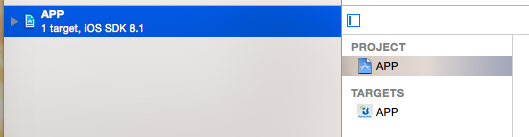
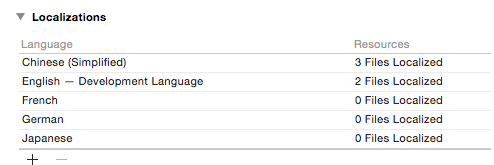
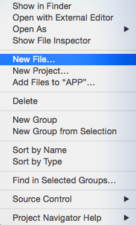
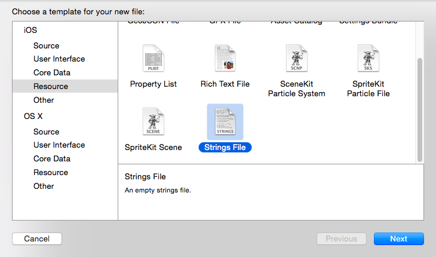
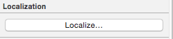
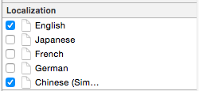
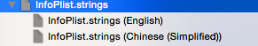
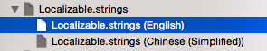
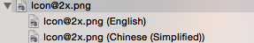

如上图所示,给项目增加语言支持,首先,我们要选中APP工程,然后在配置信息info一栏找到Localizations一栏,通过Localizations左下角的"+"按钮添加需要支持的语言. 注:如果点击添加后无反应,检查是否app工程内没有.strings文件,如果没有,先添加.string文件.添加过程如下图所示


当我们需要对应用程序的名字进行本地化显示时,第一步,我们要先创建一个名为InfoPlist.strings的strings资源文件.点击文件,通过xcode右边栏的文件属性找到Localization属性,点击按钮,选择支持的语言,此时InfoPlist.strings文件会自动根据我们选中的语言数量生成不同的strings文件,如下图:



此时,如上图,我们只需在两个strings文件内添加如下语句:
CFBundleDisplayName ="ebank";
CFBundleDisplayName ="标准银行";
再将APP-info.plist中的Bundle display name对应的值改为CFBundleDisplayName,这样,应用程序名的本地化显示就完成了.
同应用程序名类似,第一步创建名为Localizable(如果不是此文件名调用上会有区别)的strings资源文件, 然后设置Localization属性,选择语言,在文件中添加本地化语句,如下:

"loading" ="Loading...";
"loading" ="加载中...";
此时,我们只需在代码中使用NSLocalizedString()来读取本地化字符串即可,代码如下:
NSString *loading = NSLocalizedString(@"loading",nil);
如果,strings文件命名并非Localizable,比如为app.strings,那么此时应该调用NSLocalizedStringFromTable()来读取本地化字符串.
NSString *loading = NSLocalizedStringFromTable(@"loading",@"app", nil);
图片的变化分为两种方法.
第一种,通过在Localizable.strings不同语言的文件内,设置不同的文件名实现如下
"imageName" = "1.png";//English
"imageName" = "2.png";//Chinese
第二种,选中图片,通过右边栏设置Localization属性,选择支持语言,此时图片索引部分变为下图所示:

这是在项目文件中会生成en.lproj及zh-Hans.lproj两个文件(支持语言多的话,文件也会相应增加,找.lproj结尾文件即可),然后直接在文件中替换图片,即可实现图片的本地化显示.
目前5.2产品代码中,需要进行处理的中文一栏
| 中文 | 出现位置 |
|---|---|
| 提示 | alert弹窗的标题 |
| 取消 | alert弹窗取消按钮 |
| 请将二维码放入扫描框内 | 二维码界面 |
| 网络请求失败 | 网络请求失败提示内容 |
| 确定 | alert弹窗确定按钮 |
| 您有新的离线资源需要下载，是否更新 | 提示离线资源是否下载 |
| 暂不更新 | 暂不更新的提示内容 |
| 您的设备不能使用短信功能 | a标签是短信时 |
| 您的设备不能使用电话功能 | a标签是电话时 |
| 前一项 | 键盘工具条按钮 |
| 后一项 | 键盘工具条按钮 |
| 完成 | 键盘工具条按钮 |
| 对不起网络连接失败请检查网络后再试 | TLS连接失败时提示内容 |
| 网络通讯异常请稍后再试 | TLS返回数据异常提示内容 |
例:Localizable.strings(English)内容
"提示"="Alert";
"取消"="Cancel";
"请将二维码放入扫描框内"="Please put the two-dimensional code in Scanning frame";
"网络请求失败"="Network request failed";
"确定"="OK";
"您有新的离线资源需要下载，是否更新"="New offline resources need to download,Whether to update";
"暂不更新"="NO";
"您的设备不能使用短信功能"="Your device don't have the SMS";
"您的设备不能使用电话功能"="Your device don't have the telephone function";
"前一项"="Former";
"后一项"="Next";
"完成"="OK";
"对不起网络连接失败请检查网络后再试"="Sorry,Network connection failed.Please try again after checking the network";
"网络通讯异常请稍后再试"="Network communication error.Please try again later";
例:Localizable.strings(Chinese(Simplified))内容
"提示"="提示";
"取消"="取消";
"请将二维码放入扫描框内"="请将二维码放入扫描框内";
"网络请求失败"="网络请求失败";
"确定"="确定";
"您有新的离线资源需要下载，是否更新"="您有新的离线资源需要下载，是否更新";
"暂不更新"="暂不更新";
"您的设备不能使用短信功能"="您的设备不能使用短信功能";
"您的设备不能使用电话功能"="您的设备不能使用电话功能";
"前一项"="前一项";
"后一项"="后一项";
"完成"="完成";
"对不起网络连接失败请检查网络后再试"="对不起,网络连接失败,请检查网络后再试";
"网络通讯异常请稍后再试"="网络通讯异常，请稍后再试";